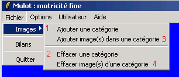
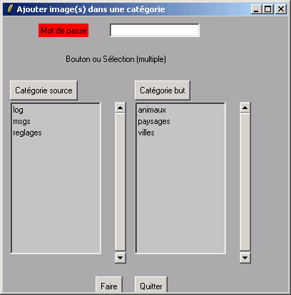

| Accueil | Activités | Bilan | Options / Réglages | Développeurs |
Le logiciel comporte un menu d'Options.
Ce menu
permet de :
Sous Linux, il est nécessaire d'appartenir ` un groupe "leterrier" pour pouvoir accéder à ces options.
Hors AbulÉdu, un mot de passe est nécessaire pour ajouter/supprimer des dossiers ou des images. Ce mot de passe est défini dans le fichier mulot.conf et vaut terrieradmin
Ainsi qu'un menu de Réglages.
Ce menu permet de choisir la langue des
menus dans mulot ainsi que le déroulement
c'est à dire l'ordre de passage des photos d'un dossier
donné.
|  |
1 Ajouter un
dossier (une catégorie) et
2 l'effacer 3 Ajouter des images en choisissant le dossier source à droite et le dossier destination à gauche puis en cliquant sur Ajouter. 4 effacer des images en choisissant le dossier puis le fichier image concerné et en cliquant sur le bouton effacer. Après un ajout
ou un effacement, quel qu'il soit,
vous devez imperativement fermer l'application et la relancer pour que les modifications soient prises en compte. Sinon, le comportement de cette application peut sembler étrange. |
Utilisez des images convenablement modifiées à l'aide d'un logiciel de retouche d'images, par exemple the GIMP Choisissez de préférence le format d'images jpg. Mais vous pouvez utiliser aussi png ou gif. Les ratios longueur / largeur de 3/2 et 4/3 paraissent satisfaisants, comme par exemple des images au format 600x400.
|
 |
Le choix du dossier (catégorie) dont les photos
apparaîtront dans la fenêtre principale se
réalise en déplaçant le nom des
dossiers de gauche à droite. Pour cela il est nécessaire de sélectionner le dossier en cliquant dessus puis de le déplacer en utilisant le bouton Faire. |
Sous AbulÉdu, le professeur peut décider de cacher les menus c'est à dire rendre inaccessible certains modes d'utilisation aux élèves de certaines classes.
Cette pratique s'avère nécessaire lorsque les utilisateurs sont jeunes, malhabiles, etc.